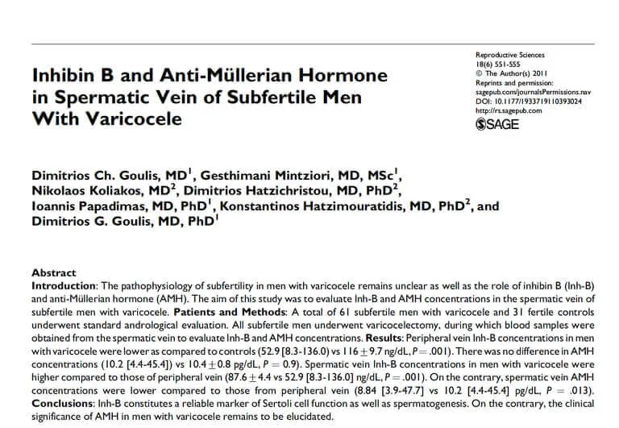

Reproductive Sciences · 2011
Inhibin B and anti-müllerian hormone in spermatic vein of subfertile men with varicocele
Goulis DC, Mintziori G. Koliakos N, Hatzichristou D, Papadimas I, Hatzimouratidis K, Goulis DG. Reprod Sci 2011, 18:551 – 555.